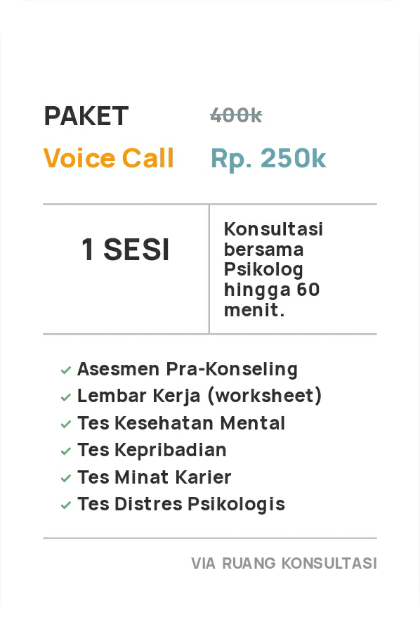
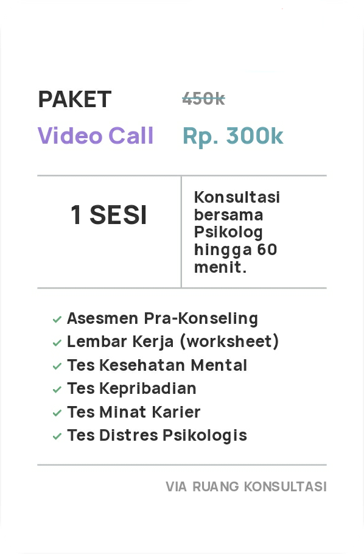
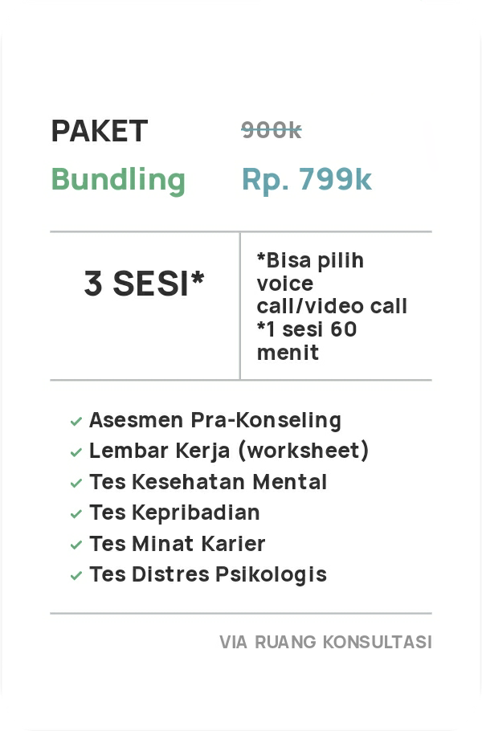

Perbedaan Konsultasi
KONSELING
- Ditujukan untuk pengguna dengan masalah KLINIS (contoh: trauma, depresi, anxiety, bipolar, masalah seksualitas)
- Diberikan asesmen yang lebih mendalam dan terapi tertentu jika dibutuhkan
- yang> yang merupakan lulusan S2 profesi psikolog klinis dewasa.
- Memberikan diagnosa
MENTORING
- Mengurusi masalah NON-KLINIS (contoh: pertemanan, pekerjaan, percintaan, minat, masalah keluarga, pengenalan diri, masa depan)
- Memberikan arahan teknis dan direktif (contoh: refleksi diri atau pembuatan action plan)
- Ditangani oleh Mentor terlatih yang merupakan lulusan S1 Psikologi
- Tidak memberikan diagnosa
Paket Konseling



Testimoni
Zela
23 Tahun
Psikolog bisa berhasil menarik aku yang keras kepala ini dari jalan buntu, dan kembali ke jalan utama, jadi lebih bisa melihat masalah dari sisi yang sangat berbeda.
Gilar Jordan Haryadi
25 Tahun
Berkonsultasi dengan psikolognya begitu nyaman, saat saya bercerita psikolognya mendengarkan saya dengan baik dan psikolognya juga memberikan worksheet yang sangat membantu untuk mengurangi kebiasaan buruk saya.

Asti
20 Tahun
Psikolog sangat baik, karena bisa memposisikan dan memahami apa yang dirasa, apa yang menjadi masalah tanpa menyinggung ataupun menjudge. Pokoknya, nyaman banget sharingnya.